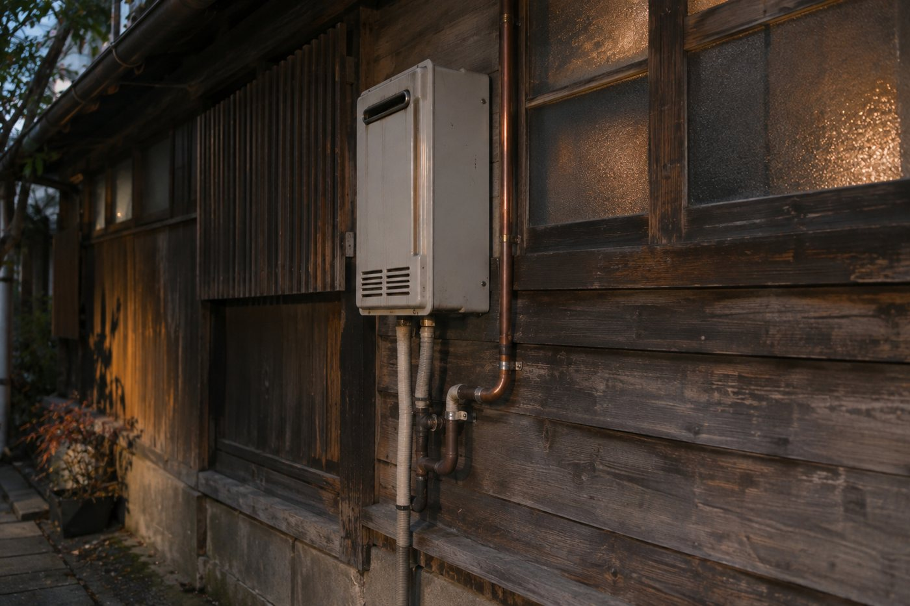

頼まれたこと
不動産会社から。管理している木造の貸家で、三年のあいだに四組が退去した。どの入居者も「夜中に二階で足音がする」と言って出ていく。原因を調べてほしい、というご依頼でした。祓ってくれる人を探しておられた様子でしたが、それはできないとお伝えしたうえでお受けしています。
調べたこと
下見に半日。築四十年、二階建て。退去した四組の話は、「二階の東側の六畳」「歩くような、間をおいた音」という二点で揃っていました。建具の建て付け、床の傾き、屋根裏に動物が入った跡がないかを見ましたが、どれも当てはまりません。
続けて三晩、その六畳に座って聞きました。一晩目は午前一時四十分に一度。二晩目は午後十一時二十分と、午前二時過ぎ。鳴る時刻は決まっていません。決まっていたのは位置で、いつも東の壁の中ほどから始まり、床のほうへ下りていくように三つ、四つと続きます。
わかったこと
二晩目の二度とも、音の一、二分前に、東隣のお宅の浴室の窓に明かりがつくのが見えました。東の壁から一メートルも離れていないところに、隣家の給湯器と配管があります。
お湯が通ると配管が温まって伸び、止まると冷えて縮みます。固定の金具のところで引っかかって、ずれるたびに音が出る。それが、境の壁と貸家の床下の空間で響いていました。時刻がばらばらだったのは、隣のご家族がお風呂に入る時刻がばらばらだったからです。
三晩目に隣のお宅へ事情をお話しし、決めた時刻にお湯を出して止めていただきました。止めてから一分半ほどで、同じ位置から同じ音が出ました。二度試して二度とも同じでした。
どう終わったか
音の時刻の記録、配管の位置を書き込んだ図、三晩目の実験の記録を提出しました。対処として、隣家の配管の固定金具に緩衝材を入れること、貸家側の壁の内側に吸音材を足すことを書いています。工事は不動産会社が設備業者に頼み、隣家の分の費用も会社が持ったと伺いました。
そのあと入居された方からは、いまのところ音の話は出ていないそうです。ご担当の方は、最後まで少し不服そうでした。
この件で覚えたこと
時刻が決まらない音は、人の暮らしに連動していることが多い。音のする部屋の中より、その時刻に窓の外で何が起きているかを見たほうが早いです。この種のご相談の大半はこういう原因です。だから、そうでなかったときに慎重になります。